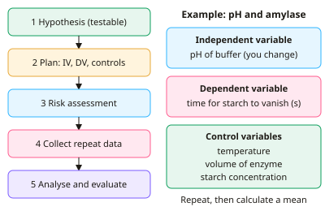

GCSE Biology · Topic 10
Practical skills and mathematics for biology
Practical skills and mathematics for biology covers the tools every biologist needs, and they are worth marks on every exam paper.
We will look at planning investigations, choosing variables and controls, judging how good data are, and spotting anomalies and errors.
Then we practise the maths: standard form, significant figures, percentages, magnification, graphs, gradients, statistics and probability, plus how scientists check evidence and weigh up risk.
- 7 subtopics
- 295 questions
- Free: 10.1 notes and 10 questions
In this topic
- 10.1Working scientifically: hypotheses, variables, controls, apparatus and risk assessmentFree below · 29 questions
- 10.2Evaluating data: accuracy, precision, repeatability, reproducibility, uncertainty and anomaliesOpen in Full Marks · 68 questions
- 10.3Arithmetic skills: standard form, significant figures, fractions, ratios, percentages and percentage changeOpen in Full Marks · 17 questions
- 10.4Magnification, units and scale calculationsOpen in Full Marks · 59 questions
- 10.5Tables and graphs: plotting, line of best fit, gradients, tangents and calculating ratesOpen in Full Marks · 26 questions
- 10.6Statistics and probability: mean, median, mode, range, random sampling, correlation and causation, genetic probabilitiesOpen in Full Marks · 65 questions
- 10.7Evidence, peer review, risk and ethics in biologyOpen in Full Marks · 31 questions
10.1 · Free notes
Working scientifically: hypotheses, variables, controls, apparatus and risk assessment

Key points
- A hypothesis is a testable prediction based on scientific knowledge, usually written as 'as X increases, Y increases' and followed by a reason (e.g. 'because molecules have more kinetic energy').
- The independent variable is the one you deliberately change, and the dependent variable is the one you measure. Write the dependent variable with its unit, e.g. 'volume of oxygen (cm³)'.
- Control variables are kept the same so that only the independent variable can affect the result. This makes the investigation a fair test, and a valid one, because it measures what it claims to measure.
- A control experiment (or control group) shows that the effect comes from the independent variable. Examples are boiled enzyme, no enzyme, distilled water instead of sugar solution, or an untreated plate.
- Choose apparatus for its resolution (the smallest change it can measure). A 10 cm³ syringe with 0.1 cm³ divisions measures 5 cm³ more precisely than a 100 cm³ measuring cylinder with 1 cm³ divisions.
- Choose a suitable range and interval for the independent variable, with at least five values. Take repeats so you can calculate a mean and spot anomalies.
- A risk assessment identifies a hazard (something that could cause harm, e.g. hot water, a scalpel, bleach, microorganisms). It then rates the risk (the chance and severity of harm) and gives a control measure (e.g. tongs, goggles, a disinfectant wipe).
- In microbiology use aseptic technique: flame the loop, keep the lid on, and tape the lid with two or four pieces of tape without sealing it completely. Incubate at about 25 °C in school so that human pathogens are unlikely to grow.
- For field work, use random sampling (random coordinates on two tape measures) with a large enough sample size to avoid bias. Use a transect to show change along an environmental gradient.
- Plot the independent variable on the x-axis and the dependent variable on the y-axis, with labelled axes and units. Use a bar chart for categoric data and a line graph or scatter graph with a line of best fit for continuous data.
- Treat living organisms ethically. Minimise harm, use as few organisms as possible, and return wild organisms to their habitat after sampling.
In more detail
- Writing a hypothesis: 'As the temperature increases, the rate of reaction of amylase will increase up to an optimum, because molecules collide more often.' Include a reason.
- Prediction vs hypothesis: a hypothesis is an explanation that can be tested; a prediction says what you expect to observe if the hypothesis is correct.
- Choosing range and interval: e.g. temperatures from 20 °C to 60 °C every 10 °C gives five values, enough to see a trend and spot an optimum.
- Risk assessment format: hazard → risk → precaution, e.g. hot water bath → scalding → keep it below 60 °C and handle tubes with tongs.
Practice
Working scientifically: hypotheses, variables, controls, apparatus and risk assessment: 10 questions
Pick an answer to check it, or open the answer for the explanation.
1. In an investigation into the effect of temperature on enzyme activity, which term describes the temperature of the water bath?
- Dependent variable
- Anomaly
- Independent variable
- Control variable
Show answer
C: Independent variable. The temperature is the factor the investigator deliberately changes, so it is the independent variable. The rate of reaction is the dependent variable.
2. A student counts oxygen bubbles per minute from pondweed placed at different distances from a lamp. What is the dependent variable?
- Mass of pondweed used
- Temperature of the water
- Number of bubbles per minute
- Distance from the lamp
Show answer
C: Number of bubbles per minute. The dependent variable is what is measured as a result of the change: the number of bubbles per minute. Distance is the independent variable.
3. In the pondweed investigation, which method best keeps temperature constant as the lamp is moved closer?
- Put a beaker of water between the lamp and the pondweed
- Use more pondweed
- Turn off the room lights
- Count the bubbles for longer
Show answer
A: Put a beaker of water between the lamp and the pondweed. A beaker of water absorbs heat from the lamp, acting as a heat shield, so temperature stays constant and only light intensity changes.
4. Which is a testable hypothesis?
- Raising the temperature from 20 to 40 °C will increase the rate of amylase activity
- Is amylase affected by temperature?
- Temperature is a variable
- Amylase is an enzyme found in saliva
Show answer
A: Raising the temperature from 20 to 40 °C will increase the rate of amylase activity. A hypothesis is a testable prediction linking the independent and dependent variables. The other options are a fact, a question and a definition.
5. A student heats water on a Bunsen burner. Which statement uses 'hazard' and 'risk' correctly?
- Scalding is the hazard; hot water is the risk
- A risk is the control measure used to prevent harm
- Hazard and risk mean the same thing
- Hot water is the hazard; the chance of being scalded is the risk
Show answer
D: Hot water is the hazard; the chance of being scalded is the risk. A hazard is something with the potential to cause harm (hot water). The risk is the likelihood and severity of that harm (scalding).
6. Which apparatus measures 5.0 cm³ of enzyme solution with the best resolution?
- 250 cm³ beaker
- 50 cm³ conical flask
- 100 cm³ measuring cylinder with 1 cm³ divisions
- 10 cm³ syringe with 0.1 cm³ divisions
Show answer
D: 10 cm³ syringe with 0.1 cm³ divisions. The syringe has the smallest scale division (0.1 cm³) and a range close to the volume needed, so it measures 5.0 cm³ most precisely.
7. Why might a tube containing boiled amylase be set up alongside the test tubes?
- To provide an extra repeat
- To increase the rate of reaction
- To kill microorganisms in the starch
- To show the starch breakdown is caused by active enzyme
Show answer
D: To show the starch breakdown is caused by active enzyme. Boiling denatures the enzyme. If starch is not broken down in this control, the change in the test tubes must be due to active amylase.
8. Why are bacterial cultures in schools incubated at about 25 °C rather than 37 °C?
- Enzymes denature at 37 °C
- Human pathogens are less likely to grow
- Agar melts above 25 °C
- Bacteria cannot grow above 30 °C
Show answer
B: Human pathogens are less likely to grow. 37 °C is close to human body temperature, which favours growth of pathogens. 25 °C reduces this risk while still allowing harmless bacteria to grow.
9. The IV is the type of antiseptic (A, B, C) and the DV is the diameter of the clear zone in mm. Which graph is most suitable?
- Histogram
- Line graph joining the points
- Scatter graph with line of best fit
- Bar chart
Show answer
D: Bar chart. The independent variable is categoric (types of antiseptic), so a bar chart is correct. Lines and best-fit lines are for continuous variables.
10. Which method is best for estimating the number of daisies on a school field using quadrats?
- Place quadrats only in shaded areas
- Place quadrats in a line from the school gate
- Place quadrats at random using random-number coordinates
- Place quadrats where daisies look most dense
Show answer
C: Place quadrats at random using random-number coordinates. Random placement avoids bias, so the sample represents the whole field. The other methods choose positions that would bias the estimate.
Keep going in Full Marks
Full Marks has 29 questions on Working scientifically: hypotheses, variables, controls, apparatus and risk assessment (19 more than here), set out in practice levels. You also get notes and 3D models for all 7 subtopics of Practical skills and mathematics for biology, plus games, timed exams and past papers.